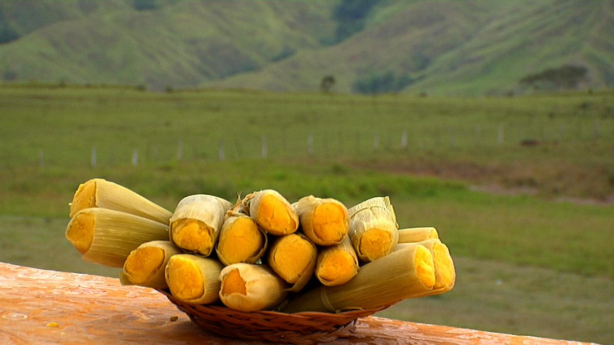
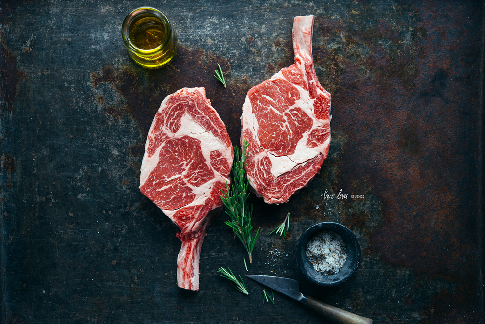
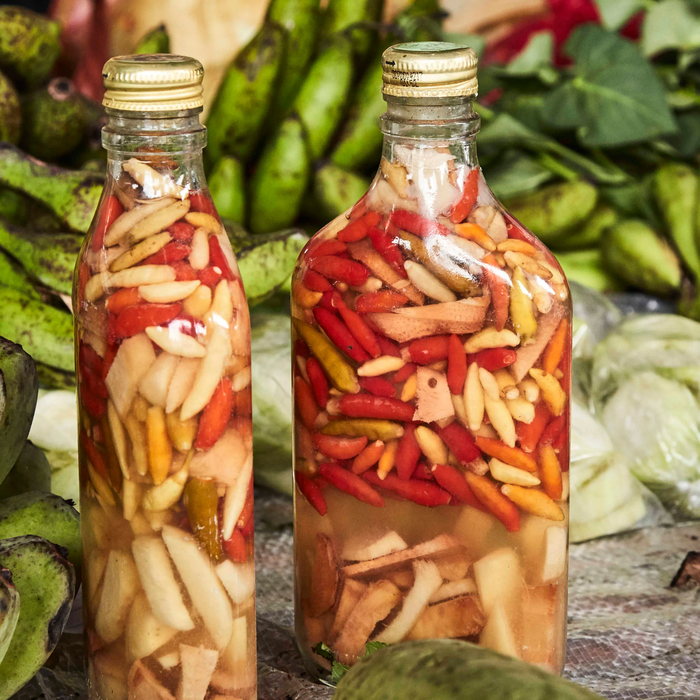

REPUBLIC OF THE PHILIPPINES
REPUBLIC OF THE PHILIPPINES
Bukidnon is world-famous for its sweet, high-quality pineapples grown in the vast plantations of Manolo Fortich.

A popular steamed corn cake made from grated young corn, milk, and sugar, wrapped in corn husks.

Coming from cattle raised in the cool highlands, our beef is known for being exceptionally tender and flavorful.

A spicy, fermented coconut vinegar infused with various herbs and bird's eye chili (sili). Perfect for dipping!